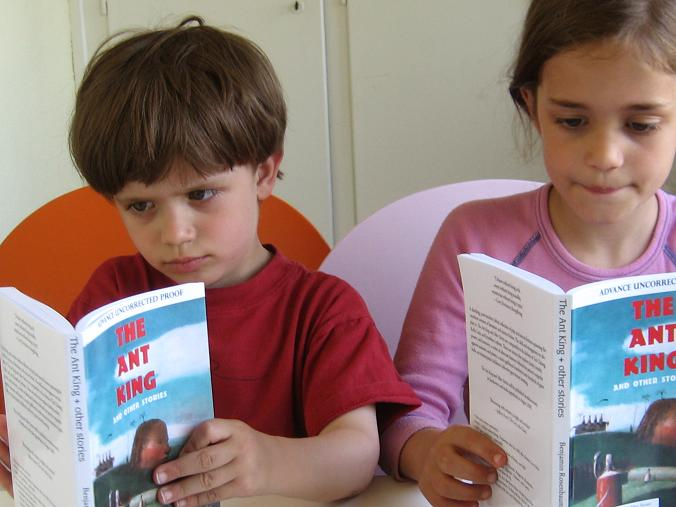

|
|
ARCs!
I got the advance reading copies for my collection, The Ant King & Other Stories in the mail the other day, from my fabulous publisher, Small Beer Press.

Very excited.
Hey, if you know anyone who wants to review this book somewhere, or interview me, or whatever, let me know so I can try to score them an ARC!
(Thanks to our fabulous ARC models Noah and Aviva.)

{kind=link}
{kind=link}
Totally awesome. I love the pic and the great looking cover. It seems like you're already hooked up with Cory Doctorow & Boing Boing, but you might try Live Granades https://granades.com/ (of LOLTrek fame) to see if they're interested in doing a review.
Good thought, thanks
Posted by: Benjamin Rosenbaum at May 16, 2008 12:07 AMOoh! Ooh! Me! Me!
Posted by: Niall at May 16, 2008 12:17 AMI would definitely be interested, Ben. It's likely I'd be able to review it for IRoSF. Just send me an email if that sounds cool, and I'll reply with my address.
Posted by: Jason Erik Lundberg at May 16, 2008 05:35 AMGreat! Niall, I assume you're talking about a review as opposed to an interview? I've passed both of ya on to Gavin.
Posted by: Benjamin Rosenbaum at May 16, 2008 11:08 AMAhem, got a bit carried away in my excitement there. Review, yes, thanks. :)
Posted by: Niall at May 16, 2008 12:06 PMGod, Noah's gotten so big!!!
Posted by: Mary Anne Mohanraj at May 19, 2008 08:39 PM... and it arrived today. Thanks. Looks good!
Posted by: Niall at May 27, 2008 07:41 PMI'd love to review it on my blog. Discovered your work only this year, and I've been hunting stories down and devouring them...
Posted by: Shira Lipkin at May 30, 2008 01:54 PM